- 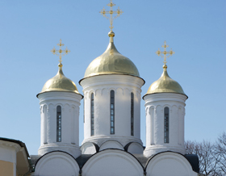
Восточный фасад
- 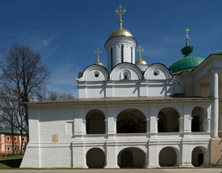
Западный фасад
- 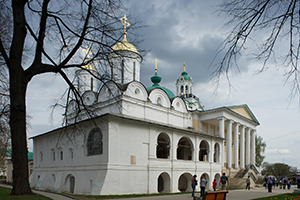
Вид с северо-запада
- 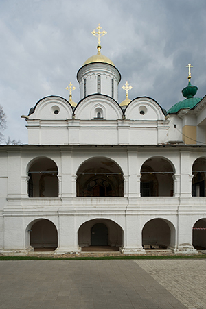
Галерея
- 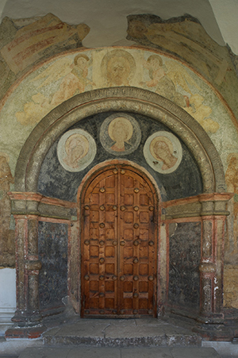
Центральный портал
- 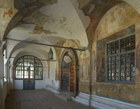
Интерьер галереи

Роспись сводов средокрестия
- 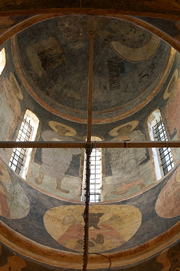
Роспись купола: Христос Пантократор, святители, пророки
- 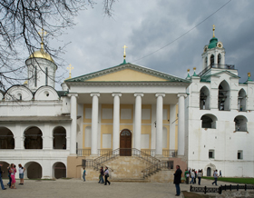
Церковь Ярославских чудотворцев: Звонница
- 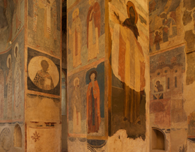
Росписи на столбах
- 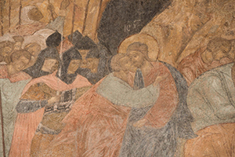
Роспись южной стены: Поцелуй Иуды
- 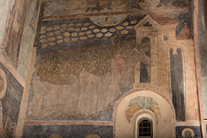
Роспись северной стены: Сорок мучеников севастийских
- 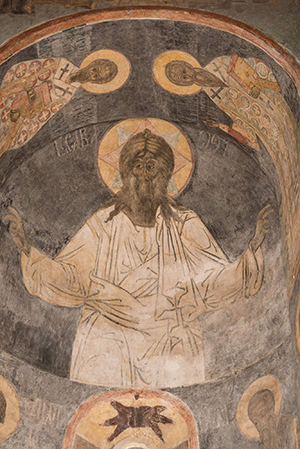
Роспись конхи южной апсиды: Господь Саваоф
- 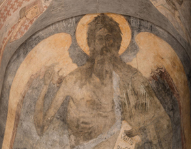
Роспись конхи северной апсиды: Иоанн Креститель
- 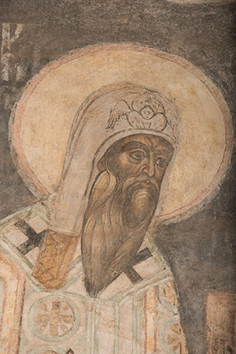
Роспись алтаря: Святитель Алексий, митрополит Московский
- 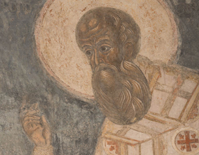
Роспись алтаря: Святитель Григорий Богослов
Иоанн Предтеча

Роспись конхи центральной апсиды: Похвала Богоматери
- 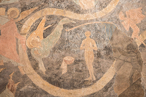
Страшный суд
- 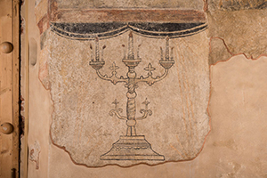
Подсвечник
- 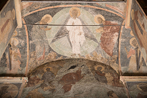
Преображение
- 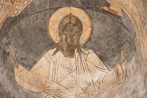
Господь Саваоф
Северный фасад
Южный фасад
Вид с юго-западного угла
Деталь оформления фасада
Деталь оформления глав
Северный фасад
Роспись южного свода: Воскресение Господне. Сошествие во ад
Роспись северного свода: Вознесение Господне
Роспись южной стены: Проповедь на море
Роспись южной стены: Христос перед Каиафой

Роспись западной стены: Спор о субботе
Роспись северной стены: Вечеря в доме Симона прокажённого
Роспись западной стены: Поругание Иисуса Христа
Роспись западной стены: Усекновение главы Иоанна Предтечи
Роспись на своде: Троица Новозаветная
Роспись южной стены: Богоявление
Роспись северной стены: Исцеление в стране Гадаринской
Роспись северной стены: Хождение по водам. Сомнение Петра
Роспись южной стены: Лепта вдовицы
Роспись на своде: Успение Богоматери